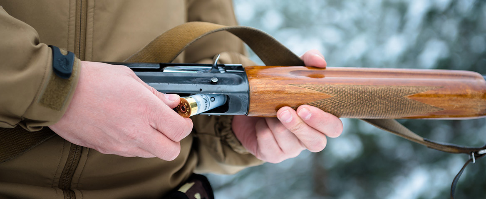
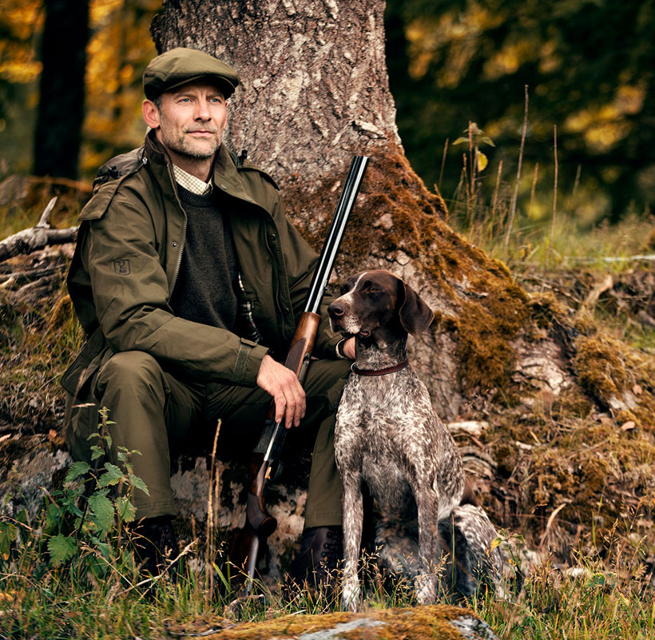

1. L'histoire de la flasque
Depuis le 18ème siècle, les hommes et les femmes portent des flasques, discrètement nichées dans une poche ou un sac à main, pour disposer à portée de main et en toute circonstance d'une petite dose d'alcool. Si l'usage des flacons remonte à l'âge de pierre, ce n'est qu'à partir du 18ème siècle que la flasque dans sa forme moderne devient un véritable accessoire pour homme ou femme. Aujourd'hui, la flasque à alcool revêt également un caractère mythique, c'est l'accessoire des aventuriers, des soldats et rebelles d'époques où l'alcool n'est pas toujours facilement disponible, ou même légal.
2. L'histoire de l' Alcool
L'alcool a probablement été découvert au Néolithique, lors de la sédentarisation de groupes humains, au hasard d'une fermentation alcoolique spontanée d'aliments farineux ou sucrés. En 2018, des archéologues pensent avoir mis à jour dans la caverne de Raqefet (sud de Haïfa dans le nord d'Israël), lieu de sépulture du Natoufien (12 500 - 10 000 av. J.-C.) le site préhistorique le plus ancien connu de production d'une boisson fermentée, proche de la bière mais moins alcoolisée, éventuellement cérémonielle, âgée d'environ 13 000 ans. La littérature antique l'évoque fréquemment dans la vie sociale des hommes avec comme première référence la bière en Mésopotamie. Dans l'Antiquité, le culte de Dionysos/Bacchus est répandu en Grèce et à Rome. L'alcool aurait eu un usage sacré, conduisant notamment à l'extase mystique, usage repris par le chrétiens dans le mythe du sang du christ. « La coupe » contenant du vin est censée renfermer la divinité. Selon le récit biblique « Noé planta la vigne et s'enivra » (Genèse9. 20).
3. Quand et comment l'utiliser
Une flasque vous permez de pouvoir transporter plus fcilement et en plus petite quantité de l'alcool. Vous pouvez donc la prendre avec vous pour des petits moments de plaisir entre amis, tel qu'à la chasse. Afin de garantir la meilleur conservation possible de votre alcool à l'intérieur de la flasque, il vous est vivement recommandé de "culé" votre flasque avant sa prmière utilisation. Ce procédé vise à concerver le goût eacte de l'alcool sans qu'il soit entravé par celui des paroies de flasque. Afin de réaliser cela, vous devez mettre une faible quantité d'alcool fort (40 degré) dans votre votre flasque, la secouer et la laisser reposer pendant 24H. Après cela vous jetter l'alcool utilisé pour culer votre flasque et vous êtes prêt à savourer ce doux instant de plaisir.
4. Abonnez vous à Jour de Chasse
Ce journal vous permettera de trouver la tenue idéale de chasse pour se marier avec votre flasque. Suivez ainsi chaque mois les nouvelles tendances pour mettre en valeur vos flasques.
 s'abonner